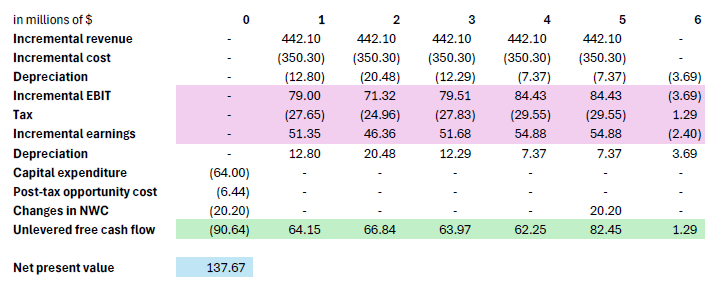
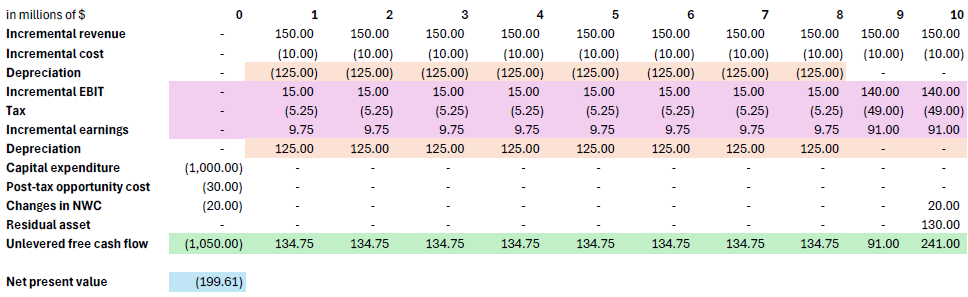
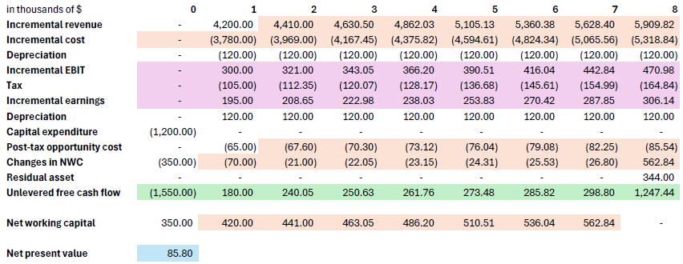

Ishan Pranav
March 8, 2024
Professor Shan Ge
FINC 7 Corporate Finance
Home Builder Supply, a retailer in the home improvement industry, currently operates seven retail outlets in Georgia and South Carolina. Management is contemplating building an eighth retail store across town from its most successful retail outlet. The company already owns the land for this store, which currently has an abandoned warehouse located on it. Last month, the marketing department spent $15,000 on market research to determine the extent of customer demand for the new store. Now, Home Builder Supply must decide whether to build and open the new store.
What are the incremental cash flows?
You work for Apple. After toiling away on $10.7 million worth of prototypes, you have finally produced your answer to Google Glasses: iGlasses. iGlasses will instantly transport the wearer into the world as Apple wants her to experience it: iTunes with the blink of an eye and apps that can be activated just by looking at them. You think that these will sell for five years until the next big thing comes along (i.e. Galaxy Glass). Revenues are projected to be $442.1 million per year along with expenses of $350.3 million. You will need to spend $64 million immediately on additional equipment that will be depreciated using the 5-year MACRS schedule.
Note: Depreciation starts in year 1. From year 1 to year 6, depreciation is $12.8m, $20.48m, $12.29m, $7.37m, $7.37m, $3.69m.
Additionally, you will use some fully depreciated existing equipment that has a market value of $9.9 million. As the iGlasses are an outcome of the R&D center (but iGlasses no longer use any resource of the R&D center), Apple plans to charge $5 million of the annual costs of the center to the iGlass product for four years in its earnings report. Finally, Apple’s working capital levels will increase from their current level of $121 million to $141.2 million immediately. They will remain at the elevated level until Year 4, and they will return to $121 million in Year 5. Apple’s discount rate for this project is 14.5% and its tax rate is 35%. Revenue, costs, and depreciation all start in Year 1.
What is the net present value (NPV) of the project?

The net present value of the project is about $137.67 million.
US Steel is considering adding an additional furnace that will operate for ten years, starting in Year 1 (currently, it’s Year 0). Last year the company commissioned a feasibility study that costs $1 million. The study came up with the following numbers. The new furnace costs $1,000 million, which will be spent in Year 0, and has a salvage value of $200 million at the end of the ten-year period. Using the new furnace increases sales by $150 million per year and involves operating expenses of $10 million per year. Moreover, working capital requirements increase by $20 million immediately (added back once the project is over). According to IRS, the new furnace must be depreciated straight line over 8 years. The new furnace will need parts from an old furnace US Steel already owns. The old furnace is fully depreciated and has after-tax resale value of $30 million in Year 0. Without the parts, the old furnace has no resale value. The corporate tax rate is 35% and the cost of capital is 10%. Revenue, costs, and depreciation all start in Year 1. Should US Steel go ahead with the new furnace? Draw your own table to calculate free cash flows. Provide details on how you get to each line of items.
No, US Steel should not go ahead with the new furnace.

The net present value is about -$199.61 million.
Nvidia is considering a proposal to manufacture high-speed GPUs. The project would make use of an existing warehouse which is currently rented out to a neighboring firm, starting in Year 1 when the manufacturing begins (currently it’s Year 0). At Year 1, rental charge on the warehouse is $100,000 and this number is expected to grow at 4% per year. In addition to using the warehouse, the proposal envisages an investment in plant and equipment of $1.2 million. Depreciation is $120,000 per year. Nvidia expects to terminate the project after eight years and to resell the plant and equipment then (i.e., in Year 8) for $400,000. The project requires an initial (Year 0) investment in working capital of $350,000. Thereafter, working capital is forecasted to be 10% of sales in each of years 1 through 7 (0 in Year 8). The first year’s sales of these GPUs are expected to be $4.2 million and thereafter sales are forecasted to grow by 5% per year. Manufacturing costs are expected to be 90% of sales. The corporate tax rate is 35%, real estate income tax is 35%, and the cost of capital is 12%. Revenue, costs, and depreciation all start in Year \1. What is the NPV of the project? Draw your own table to calculate free cash flows. Provide details on how you get to each line of items.

The net present value is about $85.80 thousand.